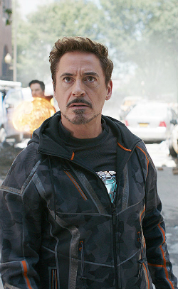

Tony Stark

Tony Stark fighting in the Infinity War.
Here's a timeline of Tony Stark's life:
-
1970 - born in Manhattan New York to Howard Stark and Maria
Stark.
- 1984 - attend MIT for two years at the age of 14.
-
1991 - his perents were both assassinated by the winter soldier.
-
2008 - Tony Stark is captured in Afghanistan and inprisoned.
While inprisoned he develops the first Iron Man suit and escapes.
-
2008 - After escaping Stark builds a sleeler and more powerful
suit. after fighting Obadiah Stane on the roof. Stark publicly admits to
being the Iron Man.
-
2012 - Tony Stark fights in The Battle For New York saving world
from Loki in the process.
-
2013 - fight the inposter Mandarin. cure pepper potts and
destroys all of the Iron Man suits for Pepper Potts.
-
2015 - along with Bruce Banner build the A.I. Ultron that was
responible for the Battle of Sokovia.Then fights with the Avengers in
the Battle.
-
2016 - The singing of The Sokovia Accords divided The Avengers.
causing Captian America and Tony Stark to Fight over wheather to sing it
or not.
-
2018 - Thanos comes to earth to get the Infinity Stones. After
Thanos retrieving the Time Stones Stark fights Thanos on Titan untimatly
lose. Thanos destorys half of life in the Universe
-
2023 - Tony Creates a time machine inorder to undo the effects of
the Infinity War. Then the Avengers fight Thanos over the Infinity
Stones.
- 2023 - Tony Stark dies in battle with Thanos
For more info check out the
Iron-Man Wikipedia page
here